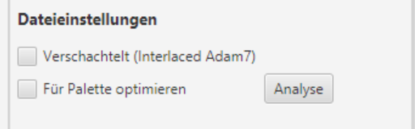
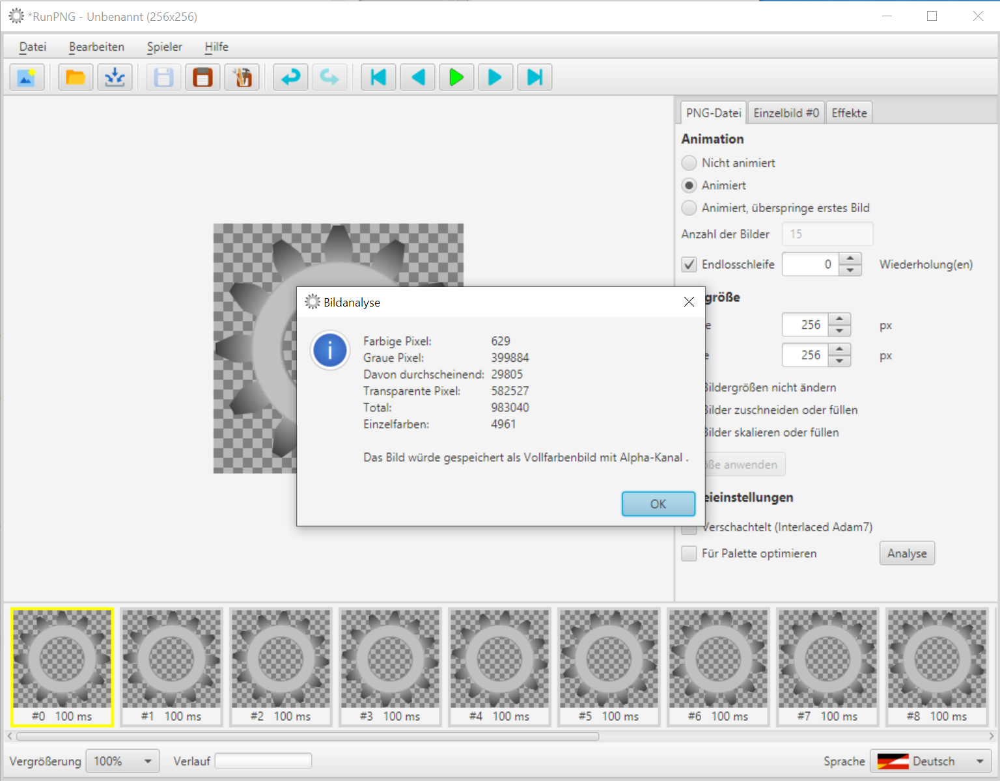
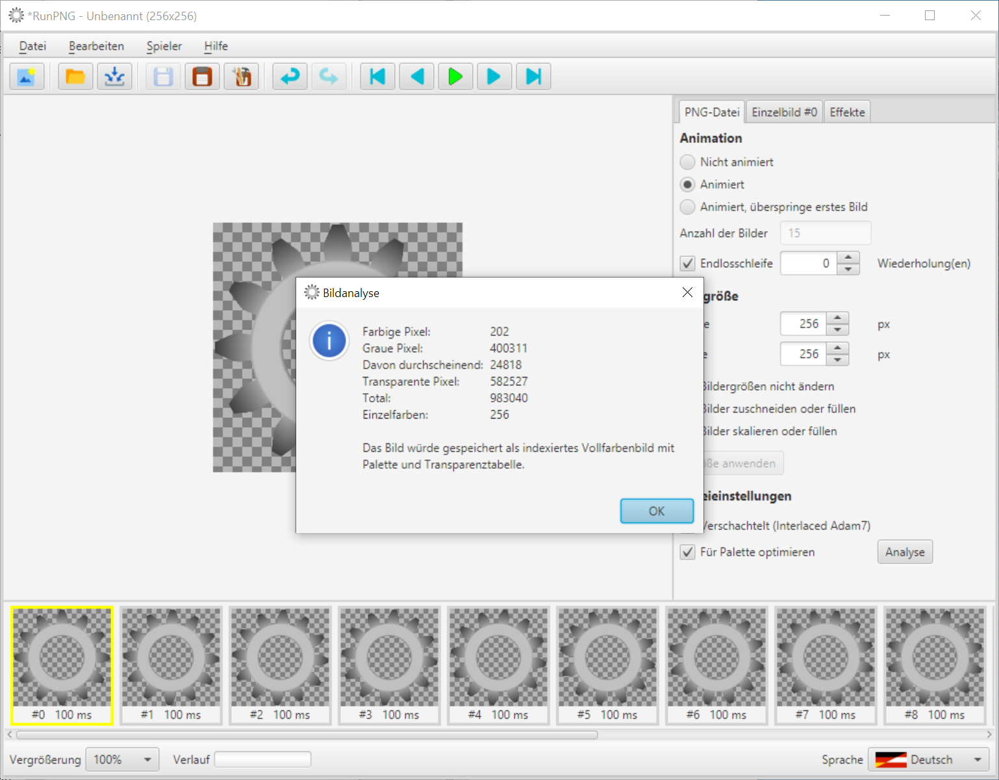

Bilder optimieren
Optimierung? Wozu?
Speicherplatz und Übertragungszeiten für Bilder sind nach wie vor ein Thema, auch wenn wir heute über Speicherkapazitäten und Übertragungsraten verfügen von denen wir früher nichtmal zu träumen wagten. Aber das muss man ja nicht vergeuden, wenn es sich mit klugen Algorithmen vermeiden lässt. Außerdem macht es durchaus einen Unterschied, 20 Bilder einer Internet-Seite mit je 400 kByte Größe oder nur mit je 200 kByte durch das Netz zu ziehen.
Automatische Optimierung
Das PNG- und das APNG-Format sehen Möglichkeiten für eine verlustfreie Optimierung vor. Da wäre zunächst die weithin bekannte Lempel-Ziv-Datenkompression, die von speziellen Filteralgorithmen im Vorfeld der Komprimierung begünstigt wird.
Im Bereich APNG kommt dann noch ein Verfahren zur Erstellung von Differenzbildern hinzu. Das heißt, dass nur das erste und ggf. das zweite Bild einer Bildsequenz ein Vollbild ist. Die darauf folgenden Bilder sind oft kleiner und enthalten nur noch die Änderungen zum vorherigen Bild.
Diese Optimierungen werden von RunPNG automatisch ausgeführt. Ebenso sucht RunPNG nach dem günstigsten Farbformat. Z. B. wäre ein Vollfarbenbild mit Transparenzkanal (Alpha) Verschwendung, wenn es auch ein einfaches Vollfarbenbild mit sechs Byte Transparenzprobe täte. Letzteres hätte nur 75% Größe im Vergleich zur Version mit Alpha-Kanal. Noch größer ist der Unterschied beim Einsatz einer Farbpalette, sofern möglich. In dem Fall bräuchte das Bild nur noch 50% oder weniger des Platzes eines Vollfarbenbildes mit Transparenzkanal. Ähnlich verhält es sich bei reinen Schwarzweiß- oder Graustufenbildern. Wozu drei Byte für Vollfarbpixel vergeuden, wenn es auch ein Byte pro Pixel tut? Wie erwähnt macht RunPNG diese Optimierungen alle selbständig und verlustfrei, ohne dass sich der Anwender darum kümmern muss.
Verschachtelt (Interlaced Adam7)

Eine Sache, die RunPNG nicht selbst entscheidet, ist der Einsatz des Adam7-Algorithmus (Interlaced). Adam7 wurde von Adam Costello, einem der Väter des PNG-Formates, konzipiert. Dieses Bildverschachtelungsverfahren ist für spezielle Anwendungsbereiche mit niedriger Übertragungs- oder Darstellungsrate gedacht. Sollte ein Interlaced Bild in RunPNG eingelesen worden sein, dann befindet sich eine Markierung an dem betreffenden Optionsfeld. Der Anwender muss das in eigener Entscheidung auswählen. Dazu sollte man auch wissen, dass Adam7 etwas größere Dateien erzeugt.
Palette und Analyse
Was RunPNG ebenfalls nicht selbst entscheidet, ist der Einsatz einer Palettenoptimierung. Wie oben bereits erwähnt kann RunPNG selbständig eine indexierte Farbpalette einsetzen. Aber nur solange das verlustfrei möglich ist. Denn die Farbpalette ist auf 256 Farben (einschließlich möglicher Transparenzen) begrenzt.
Laden wir noch einmal die Zahnräder aus dem Ordner RunPNG/doc/samples/sprockets 3/ und schalten auf Animiert um. Mit Druck auf die Schaltfläche Analyse kann man sich einen Überblick darüber verschaffen, wie die Applikation das speichern würde. Und warum sie das so macht. RunPNG bietet dem Anwender das selbe Analysewerkzeug, das es für seine eigene Entscheidungsfindung heranzieht.
Wir sehen hier, dass die Zahnrad-Sequenz als Vollfarbenbild mit Alpha-Kanal gespeichert würde. Der Grund: Es sind über 600 farbige Pixel im Bild, was eine Speicherung in Graustufen ausschließt. Die vielen durchscheinenden Pixel bedingen zudem einen Alpha-Kanal. Und die knapp 5.000 unterschiedlichen Einzelfarbwerte hindern die Applikation letztlich daran eine Palette einzusetzen.
Doch heißt das nicht, dass der Einsatz einer Palette völlig unmöglich ist. Häufig sind die einzelnen Farbunterschiede so minimal, dass es dem Betrachter gar nicht auffiele wenn man sie ein wenig angliche. Zu diesem Zweck besitzt RunPNG einen so genannten Quantizer mit einem eigens entwickelten "rollup"-Algorithmus, der die Farben erst nach Häufigkeit absteigend sortiert und dann alle Farben oberhalb eines Index von 255 mit der nächstliegenden Farbe innerhalb der Palettengrenzen (0 - 255) ersetzt.
Nun ist die Option Für Palette optimieren eingeschaltet. Die Anzahl der Farben wurde in der Darstellung auf 256 reduziert und der Anwender kann sich selbst ein Bild von den Änderungen machen. Falls er welche sieht. Mit eingeschalteter Option könnte RunPNG die Zahnräder als indexiertes Vollfarbenbild mit Palette und Transparenztabelle abspeichern.
Siehe unten: Links das Vollfarbenbild mit Alphakanal und 244 kByte Größe, rechts das indexierte Bild mit Palette und nur noch 125 kByte. Mit dem menschlichen Auge sind sie so gut wie nicht zu unterscheiden.
Einschränkend muss man jedoch ehrlicherweise sagen, dass eine Palettenoptimierung nicht immer so ein Wunschergebnis liefert. Vor allem wenn die Anzahl der unterschiedlichen Farben in die Zehntausende geht oder mehr. Das muss im Einzelfall immer ausprobiert und vom Anwender begutachtet werden.
Hinweis: Für die Analyse ist es wichtig auf die angestrebte Animationsart umzuschalten. Sonst analysiert RunPNG die falsche Anzahl Bilder.